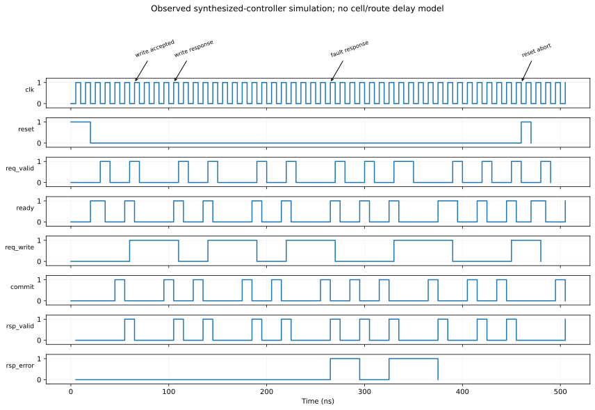

Chapter 7 · Digital design · 10–14 hours
An executable memory controller
How does a device operation become a dependable transaction?
How an analog operation becomes a digital promise
The preceding chapters describe voltages, currents, and distributions. A digital interface describes commands and results using discrete values. The circuitry still operates physically with voltages, but ranges are interpreted as logical 0 or 1. A memory controller organizes those logical signals so that a request is not lost or confused with another operation.
A clock provides recurring timing events. A register stores a logical value between events. Combinational logic computes outputs from current inputs; sequential logic also depends on stored state. A controller can therefore remember that a write was accepted, count how many cycles have elapsed, and later report completion. The clock period is a physical time, whereas a count of four cycles becomes a duration only after that period is specified.
Verilog is a hardware-description language. Register-transfer level, abbreviated RTL, describes stored values and the logic that transfers or transforms them. It should not be read as a single ordinary program executing each source line in turn. Separate hardware blocks can operate concurrently. Simulation checks the described behavior; synthesis converts supported descriptions into a logic implementation. Neither operation supplies missing analog timing data for a research device.
Prerequisites: Chapter 6; binary numbers. Objectives: understand clocked state and combinational logic, follow a valid/ready handshake, modify the controller, interpret a testbench and waveform, and distinguish functional synthesis from physical timing verification.
7.1 Hardware-description languages describe concurrent machinery
A Verilog module defines ports and logic. An assign statement represents a continuously evaluated combinational relation. A block triggered by posedge clk describes state changes at rising clock edges. Unlike an ordinary sequential Python program, separate blocks represent concurrent hardware processes.
A register stores a value between clock edges. In a clocked block, nonblocking assignment <= evaluates right-hand expressions using the pre-edge state and schedules the updates together. This permits several registers to advance consistently without depending on source-code order. A counter decrement and a state test at the same edge therefore refer to the old counter value unless explicitly expressed otherwise.
Simulation also has unknown values, represented by x, which expose uninitialized or conflicting behavior. Real hardware does not contain a magical “unknown” level; the symbol means the simulator cannot establish a logic value. The testbench uses case-sensitive comparison so an unknown read cannot silently pass as a valid zero.
7.2 Define acceptance before implementing latency
The producer presents valid, operation, address, and write data. The controller asserts ready when idle and not reset. A request is accepted only on a rising edge satisfying req_valid && req_ready. On that edge the controller stores all command fields and loads a countdown. Later changes to producer signals cannot change the accepted command.
assign req_ready = !busy && !reset;
assign mem_commit = busy && remaining == 1 && !reset;The memory commits at the final countdown edge. The response-valid register becomes high at that same edge and remains high for one clock period. A read uses two completion cycles, a write four. If the clock period is 10 ns, these are 20 and 40 ns of modeled controller service after acceptance, not measured ferroelectric switching times.
The controller can accept a new request at the next rising edge after returning to idle. A producer holding valid high must treat each ready-and-valid edge as a new acceptance. “Valid stayed high” is not a request identifier; this is why handshake protocols need a precise transfer event.
7.3 Verify invariants, not just one happy trace
An invariant is a property that must hold throughout execution. Here: at most one request is in flight; command fields remain latched while busy; a commit occurs only for an accepted, un-aborted request; and reset prevents a completion. These properties follow from the two branches that load and decrement the state, together with commit's dependence on busy, countdown, and reset.
At acceptance, busy becomes true and remaining receives the fixed latency. On subsequent busy cycles, remaining decreases until it equals one. At that final edge, busy clears and the response is produced. Because acceptance is disabled while busy, a second request cannot overwrite the latched command. This argument establishes the intended state-machine behavior for supported positive latency parameters; the executable tests check representative boundary sequences.
The public parameters are restricted to integer cycle counts from 1 through 255 because the counter is eight bits. A zero or overflowing count is outside the contract. Changing the counter width is necessary for longer transactions. This is an implementation limit, not a device limit.
7.4 Errors and reset have observable semantics
A memory fault at completion sets response error. The behavioral model suppresses writes when fault is high, preserving the previous word. A faulted read returns zero with error asserted; the consumer must check error rather than treating the data as trustworthy. That policy is simple enough to test and strong enough to prevent silent success.
Reset aborts an in-flight transaction and clears controller state. Previously committed behavioral memory persists because it is a separate module without a reset-clearing operation. In a real nonvolatile device, an interrupted analog pulse can leave an uncertain intermediate state. Our reset-abort test establishes the digital model's semantics only. A production power-fail design would need write verification, journaling, redundancy, or an explicit interrupted-write recovery contract.
The behavioral memory initially contains zeros to make tests deterministic. This is a simulation initialization choice, not a guarantee that a fabricated array powers up erased. It is deliberately separate from controller synthesis.
7.5 Run both RTL and synthesized-logic simulation
The complete sources are controller.v, memory-behavior.v, and tb.v. The supplied runner executes Icarus Verilog, synthesizes the controller with Yosys, then simulates the synthesized logic with the same testbench.
bash hardware/run-rtl.shThe testbench checks eleven transactions plus busy-request and reset-abort sequences. It covers address zero and address fifteen, write/read data agreement, exact completion cycles, a faulted write that preserves old data, a faulted read, and persistence of committed contents across controller reset. A timeout fails the run instead of letting a hung test appear successful.
Both simulations print a PASS result. Synthesis maps the controller to generic gates and registers, not to a foundry library. The post-synthesis test is therefore a useful structural-functional check, but has no characterized path delays, clock skew, or wire parasitics. It is not a formal equivalence proof across all possible inputs.

7.6 Relate the digital boundary to the circuit
The controller's write command is a digital request to a driver. It cannot directly apply the required analog programming pulse. A real bridge needs pulse generation, level shifting, current limits, selection, and sensing or verification. Different device polarities may require different driver voltages. The high-voltage write domain must not overstress low-voltage controller transistors.
The SPICE demonstration exercises a stateful read circuit separately. Its approximately 9.95 µA programmed-state read and zero erased-state current come from assumed threshold and conductance parameters. Digital success does not calibrate those analog parameters, and analog success does not verify the controller. Keeping the two checks separate makes the missing bridge inspectable rather than hiding it behind one simulation label.
7.7 Derive the controller as a transition system
The running transaction is a write of byte 0xA5 to address 3, followed by a read of the same address. The relevant state is not just the memory contents. Let $b$ be the busy bit, $r$ the remaining-cycle counter, $w$ the latched operation, $a$ the latched address, and $d$ the latched write data. The controller state is $s=(b,r,w,a,d)$ together with its response registers. A clock edge transforms the old state and sampled inputs into a new state. Combinational outputs are functions of the current state and inputs between edges.
Define acceptance $A=v\land\neg b\land\neg z$, where $v$ is request-valid and $z$ reset. Define commit $C=b\land(r=1)\land\neg z$. These predicates reproduce the implemented controller. They make two immediate properties visible. Acceptance and commit cannot be true together because they require opposite values of $b$. Reset suppresses both. The lack of simultaneous acceptance and completion is a deliberate throughput limitation of this simple state machine.
If reset is sampled high, next state is idle with cleared response and command registers. Otherwise, acceptance latches the command, sets busy, and loads $r=L_w$ for a write or $r=L_r$ for a read. If no acceptance occurs and the controller is busy, it decrements a counter greater than one; at one it clears busy and emits a response. The externally supplied memory fault is sampled at that completion boundary. A request that arrives while busy does not enter this transition system at all.
The memory module has its own transition: on a rising edge, it updates the addressed byte exactly when commit, write, and no-fault are all true. Its read data is a combinational view of the addressed word. This separation is important. Reset clears controller state, while the behavioral memory contains no reset-clearing branch. Persistence across controller reset follows from the two modules' composition; it is not a property of the controller registers themselves.
Prove command stability and bounded completion
Assume a request is accepted at edge zero with valid latency $L\in\{1,\ldots,255\}$ and no later reset. Immediately afterward $b=1$ and $r=L$. Since busy prevents acceptance, the latching branch cannot execute again before completion. The command fields therefore remain unchanged throughout the transaction. This is an induction over busy edges: the only state transitions available either decrement the counter or complete the same command, neither of which reloads its fields.
For edges $j=1,\ldots,L-1$, the old counter is $L-j+1\gt1$ and becomes $L-j$. At edge $L$, its old value is one, so commit occurs and busy clears. This proves exact completion time for the ideal synchronous transition model. The ranking quantity $r$ decreases on every continuing busy transition, which proves eventual completion under the no-reset assumption. A fault does not stall the counter; it changes the completion result. An endlessly asserted reset intentionally prevents liveness.
Safety and liveness are different. “No unaccepted command commits” is a safety property: a finite bad event would refute it. “Every accepted command eventually completes unless reset aborts it” is a liveness property under an environmental assumption. A testbench that checks data values but has no timeout can miss a liveness failure by waiting forever. The delivered testbench includes a timeout for that reason.
7.8 Read an edge trace without confusing old and new values
For a four-cycle write accepted at edge zero, the counter values immediately after edges zero through four are 4, 3, 2, 1, and 0. Commit is high before edge four because the old state is busy with remaining equal to one. At edge four the behavioral memory and controller both evaluate that old commit signal. The memory schedules its data update, while the controller schedules its response. Their nonblocking updates become visible after those evaluations.
| Rising edge | Old state relevant to action | Action | State after updates |
|---|---|---|---|
| 0 | Idle, valid write | Accept address 3, data 0xA5 | Busy, remaining 4 |
| 1 | Busy, remaining 4 | Ignore new request pins | Remaining 3 |
| 2 | Busy, remaining 3 | Count down | Remaining 2 |
| 3 | Busy, remaining 2 | Count down | Remaining 1 |
| 4 | Busy, remaining 1 | Commit if no reset; report fault if present | Idle, one-cycle response |
| 5 | Idle | Earliest next acceptance | Next transaction begins |
Changing request address to 9 while the write is busy must not redirect the operation. The memory uses the latched address, not the live request pins. This is why the directed test deliberately changes otherwise irrelevant inputs during an active transaction. A design that passes only when the producer holds every pin constant for the entire operation may be relying on an undocumented stronger interface contract.
For writes, the response data field is not specified as a post-write readback. The controller samples the memory's combinational data at the same edge that the memory schedules its update, so it can capture the old value. The meaningful write result is completion plus error status. To obtain a verified readback, issue a separate read or explicitly design a verify phase. This is a concrete example of why interface semantics must say which output fields are valid for each operation.
7.9 Latency and initiation interval diverge even in a tiny controller
Let clock period be $T_c$. A transaction with counter latency $L$ completes $LT_c$ after acceptance. Because a new command cannot be accepted on the completion edge, repeated commands begin at least $(L+1)T_c$ apart. This spacing is the initiation interval. With 10 ns clocks and four-cycle writes, service latency is 40 ns but the maximum sustained acceptance rate is one byte per 50 ns, or 20 MB/s. Quoting 25 MB/s from latency alone overstates the implemented throughput.
For two-cycle reads the initiation interval is three clocks, giving about 33.3 MB/s for one-byte transactions at the same clock. The design does not have an input queue, response-ready signal, or multiple outstanding transactions. A consumer must capture the one-cycle response. Adding a response-ready input without adding storage can lose responses when the consumer stalls. Backpressure changes the state machine, not just the port list.
A pipelined controller could accept a new request while an older one is in progress if the memory supports overlapping operations and the controller retains each command separately. It would need transaction ordering, resource arbitration, and enough state for all in-flight requests. A queue alone does not increase the memory's service rate; it buffers bursts and can increase waiting time. The concurrency requirement derived in Chapter 6 therefore implies architectural work beyond making this counter smaller.
The depth laboratory enumerates 1,024 combinations of legal idle/busy-counter states, reset, and valid for the reference acceptance and commit predicates. It verifies mutual exclusion and reset suppression, then checks countdown traces at latencies 1, 2, 4, and 255. This finite Python reference check is complementary evidence. It does not prove equivalence to arbitrary HDL behavior or replace the executed RTL and synthesized-netlist simulations.
7.10 Build a testbench that can disagree with the implementation
A testbench should predict behavior from the contract rather than copying the implementation's internal counter. Maintain a scoreboard mapping addresses to expected committed bytes. When a write succeeds, update the scoreboard. When a read succeeds, compare returned data with that map. On a faulted write or reset-aborted request, preserve the old map. If the scoreboard simply watches internal memory updates and repeats them, it cannot detect an incorrect commit.
Timing expectations should start from observed acceptance, not from the moment the testbench first raises valid. A producer may wait for ready. Record the rising edge on which both are high, then count to the promised response. For a request asserted while busy, expect no new transaction. For valid held high across a return to idle, expect a fresh acceptance at the next eligible edge. These are distinct tests of the same handshake rule.
Inject faults at different times to establish the sampling contract. In the delivered design, only fault at completion controls the response and write suppression. A transient fault earlier in the operation is not retained. That choice is explicit but may be insufficient for an analog pulse generator that must latch any overcurrent event. If the hardware requirement is “any fault during programming aborts the write,” the RTL needs a sticky fault state and an abort protocol. The current testbench should not be described as validating that stronger behavior.
Boundary tests are unusually valuable in counters and addresses. Exercise minimum latency one, maximum representable latency 255, first and last address, and reset just before a would-be commit. Unsupported latency zero wraps through the counter behavior rather than representing an instantaneous operation; the contract forbids it. A robust reusable module would add an elaboration-time parameter check. Here the documented supported range and boundary tests identify the limitation without claiming all invalid configurations are rejected by hardware.
Waveforms provide evidence about ordering but require interpretation. A value-change dump, or VCD, records signal transitions produced by a simulator. A diagram drawn from the actual VCD can show acceptance, countdown, commit, and error. A hand-drawn ideal waveform only states an intended behavior. The included waveform is parsed from the executed simulation, and the testbench assertions provide the corresponding pass/fail criteria.
7.11 What synthesis preserves and what timing adds
RTL synthesis translates a supported behavioral description into registers and combinational logic. Constant propagation can simplify parameterized arithmetic, and Boolean optimization can change the internal structure while preserving intended functional behavior. The Yosys synthesis documentation describes the transformation stages; the course's result is specifically a generic logic implementation. The Icarus simulation documentation distinguishes the simulated model and test environment from target-technology implementation.
Simulation after synthesis catches some mismatches introduced by transformations or unsupported coding constructs. It remains a finite input test unless supplemented by formal equivalence checking. Mapping generic logic to a standard-cell library introduces characterized timing arcs, input capacitances, and drive strengths. Placement and routing then introduce interconnect parasitics. Only after these steps can a clock period be checked against physical setup and hold constraints with relevant process, voltage, and temperature corners.
For a simple register-to-register path, let $t_{cq}$ be launch-register clock-to-output delay, $t_{ m logic}$ combinational delay, $t_{ m wire}$ interconnect delay, and $t_{ m setup}$ destination setup requirement. With zero skew and no additional uncertainty, the setup condition is $T_c\ge t_{cq}+t_{ m logic}+t_{ m wire}+t_{ m setup}$. This explains why a controller that logically counts four cycles does not establish the duration of a physical four-cycle operation. Clock period is a separate implementation constraint.
Asynchronous analog status introduces another boundary. If a sense-complete or fault signal can change near a clock edge, it can violate a register's sampling assumptions and create metastability. A synchronizer reduces the probability that metastability propagates, but adds latency and does not make a multi-bit bus coherent by itself. A real analog–digital bridge needs a handshake or stable-data protocol as well as signal-level conversion. The behavioral memory supplies synchronous ideal signals, so these effects are outside the demonstration.
7.12 Refine the digital contract into an analog operation
A write request must eventually control a waveform: pulse amplitude, width, edge rates, selected row and column, and verification. A fixed counter can approximate this schedule only if every allowed device and operating condition fits within the allocated intervals. Otherwise the controller needs a completion indication or a bounded retry loop. The retry policy must distinguish an unsuccessful write from an uncertain result after an interrupted pulse.
A possible teaching extension uses states SELECT, PULSE, SETTLE, VERIFY, and RESPOND. Selection establishes isolation. Pulse applies stress. Settling waits for the specified read condition. Verification compares the observed state with the requested state. A failed verification can request another pulse until a count or stress limit is reached. That sequence is a proposed extension, not implemented behavior in the delivered controller. It would connect the probabilistic switching model to a concrete latency and wear distribution.
If each independent attempt succeeds with probability $s$, an unlimited geometric retry model has expected attempts $1/s$. With a maximum of $m$ attempts, residual failure is $(1-s)^m$ and expected attempts are $[1-(1-s)^m]/s$. These expressions follow by summing the probability that each attempt is reached. Physical attempts are often not independent because prior pulses change the state, so the geometric model is only a starting point. A retry controller must be evaluated against measured conditional success and accumulated damage.
1. Specify a response-backpressure repair
A consumer may be unable to accept the response for several clocks. What state and invariant must be added?
Solution. Add response-ready and retain response-valid, data, and error until a valid-and-ready response handshake occurs. The response fields must remain stable while stalled. Prevent a new transaction from overwriting an unconsumed response, or add a queue with explicit capacity. Test a stall across completion and a stall while the producer holds request-valid. Merely stretching valid for an arbitrary number of clocks does not establish correct delivery.
2. Explain a reset at the commit boundary
Reset rises before the edge at which remaining equals one. Does the behavioral memory change?
Solution. Commit includes the condition not-reset, so it is low when sampled at that edge. The memory therefore does not write, and the controller clears its state without a completion response. This relies on reset meeting the synchronous sampling assumptions. A real analog pulse might already have changed the device before reset, so the same digital trace cannot establish that the physical cell preserved its previous state.
3. Find the retry cost hidden by a successful final result
Under the independent-attempt teaching model, take $s=0.9$ and at most three attempts. Calculate residual failure and average attempt count.
Solution. Residual failure is $0.1^3=0.001$. Average attempts are $(1-0.001)/0.9=1.11$. If each pulse costs the same energy and stress, those costs rise by 11% relative to one attempt; verification and settling add further overhead. A report that counts only the final successful write omits these costs. If later pulses have different conditional success or amplitude, replace the geometric model with the actual state-dependent sequence.
7.13 A reproducible modification exercise
To learn hardware design from this controller, make one semantic change at a time. Start with the supported read-latency parameter. Predict the acceptance and response edges before running the test. Then run both the original RTL and synthesized logic against the same expected trace. If only one fails, investigate a representation or synthesis issue; if both fail identically, investigate the contract, test expectation, or shared design logic. This sequence makes the evidence diagnostic.
A stronger exercise changes the fault policy from completion-only sampling to remembering any fault during a transaction. Add a register $f_s$ for sticky fault state. Clear it when a new request is accepted. During busy cycles, update it to $f_s\lor f_{\rm input}$. At completion, the result must include the old sticky value and the currently sampled fault. Using only the newly scheduled register value would miss a fault first asserted on the completion edge because nonblocking assignments update later.
The write-suppression logic must use the same effective fault condition as the response. Otherwise the controller could report an error while the memory commits, or report success while the memory suppresses the write. This is a compositional requirement: two modules sharing a transaction boundary must agree on the event that makes it valid. Updating only the response branch would leave the memory module's behavior inconsistent with the intended policy.
This sticky-fault controller is an exercise specification, not a description of the delivered source. The supplied controller retains its simpler documented policy. To implement the extension, add tests for a fault on an early busy cycle that disappears before completion, a fault appearing exactly at completion, a fault while idle, and reset after a fault. The expected write state must come from the revised contract. A passing final read without those temporal cases would not establish the new semantics.
State-space reasoning beyond selected traces
A formal invariant proof has a base case and an inductive step. For command stability, the base is the state immediately after acceptance. The step assumes a busy state with a latched command and shows that every allowed next transition either preserves that command or terminates the transaction. The proof must enumerate reset as an allowed terminating exception. Omitting reset from the transition relation can make an apparently complete proof establish a different machine from the one implemented.
For bounded completion, environmental assumptions must also be explicit. The clock must continue, reset must remain deasserted, and the loaded counter must be in the supported positive range. The proof does not require fault to remain low because faults alter status rather than progress in this controller. This is a useful distinction: assumptions should be no stronger than necessary, or the proof may exclude precisely the cases the user needs the design to handle.
Unknown simulation values expose another boundary. Registers without reset or defined initialization may begin as unknown in a four-state simulator. An unknown busy bit can make ready unknown, and a testbench using loose comparisons may accidentally tolerate it. Drive reset deliberately, then check that externally meaningful outputs become defined under the supported protocol. A deterministic behavioral-memory initialization makes the exercise reproducible but should not be mistaken for a physical power-up guarantee.
Functional coverage records whether important classes of behavior were exercised: read and write, endpoint addresses, busy request rejection, early reset, completion fault, and each supported latency boundary. Coverage is not correctness; a test can execute a case without checking the right property. Assertions and scoreboards supply the expected behavior. Conversely, a strong assertion that never activates because its trigger never occurs provides no evidence for that case. Review both the checks and the stimulus that reaches them.
4. Find the sticky-fault off-by-one bug
An extension sets fault_seen <= fault_seen | mem_fault and then sets the response error to fault_seen on the same completion edge. What goes wrong?
Solution. The response reads the old sticky register. If the first fault occurs on the completion edge, the scheduled update has not yet taken effect and the response can report success. Use an effective condition combining old sticky state with the current fault, and use that same condition for write suppression. Test a completion-edge-only fault explicitly. The bug is temporal, so a test that holds fault high for several cycles may never reveal it.
7.14 Foundation exercises and solutions
5. Off-by-one latency
A request is accepted at clock edge 0 with remaining set to 2. At which edge does completion occur?
Solution. At edge 1, old remaining is 2, so it becomes 1. At edge 2, old remaining is 1, so commit and response occur. Nonblocking updates do not make the newly loaded value count down on the acceptance edge.
6. Changing address while busy
Why does the test change request address during a write?
Solution. It checks that the accepted address was latched. If the memory used live request pins, the write could land at the wrong address. The expected old address changes while the unaccepted address remains unchanged.
7. Modify the service time
Set read latency to 3 cycles. What must change?
Solution. Change the parameter and update the testbench's expected read count to 3. At 10 ns per clock, modeled read service becomes 30 ns. Re-run RTL and synthesized-logic tests. This changes the interface contract; it does not establish that a particular analog device meets 30 ns.
8. An assertion's scope
Does eleven passing transactions prove absence of all protocol bugs?
Solution. No. They cover named cases. Formal state-space verification or broader constrained-random tests could add confidence, particularly if concurrency, queues, or multiple outstanding requests are introduced. For this small serial controller, the state-machine argument and targeted tests establish a bounded, reviewable baseline.
You can now read and modify a clocked controller while preserving its transaction contract. The next chapter explains what is required to turn that logic into a physical chip.